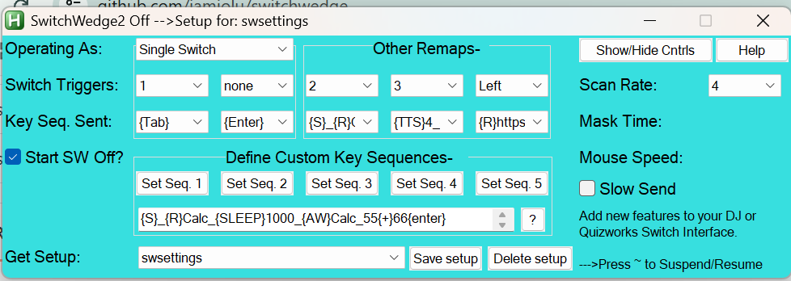

An AutoHotkey V1 Script for Windows Computers
New: bug fixes - keyboard commands are now based on the Alt-key combos rather than the Win-key combos to avoid conflicts with Windows.
New: A 2-switch Spot Scan Method
New: Use Alt-m to reveal the current mouse location – helpful for constructing Custom Sequences
SwitchWedge can enhance accessibility to many programs and websites, and it can greatly increase the utility of common switch interfaces such as keyboard emulators like the DJ Switch Interface Pro, adapted mice, or adapted joysticks/gamepads. SwitchWedge supports up to 5 switches, and offers enhancements like mouse control, spot scanning, launching apps, opening files, opening web pages, and creating complex macros - features that most switch interfaces do not offer.
Understanding the Setup Screen
Operating Modes for switch inputs 1
and 2
Special
SwitchWedge Commands and Combining them with Custom Key
Sequences
SwitchWedge and its Associated Files
Understanding the Setup Screen:

The leftmost column of labels describes what the row of button(s)
to the right are for. The topmost label, "Operating
As," defines an operating mode for the two leftmost Switch
Triggers (switch interface inputs.) These
operating modes provide some active features that
SwitchWedge offers, and they pertain only to the two leftmost
triggers as denoted by the box surrounding those buttons.
You can choose from the Switch Trigger drop down
menus that cover standard switch interface inputs - various
keystrokes, adapted mouse inputs, or joystick buttons 1- 8
- to initiate the actions of SwitchWedge. You can also
choose 'none' as a Switch Trigger to define that trigger as
inactive.
The other three Switch Triggers (rounding out
the other three switch inputs on many switch interfaces) can be
redefined to send key sequences and/or special commands as
described below in the section: Define
Custom Key Sequences. The row of drop down menus
labeled Key Seq. Sent represents keystrokes,
custom key sequences, or mouse clicks that are sent to the active
application as a result of a user issuing a Switch
Trigger. Depending on the operating mode, the Key
Seq. Sent menus may be hidden. For example, in Spot
Scan mode, because only mouse click is sent during spot
scanning the Key Seq. Sent options are hidden
for leftmost 2 triggers.
Whenever you change operating modes SwitchWedge will open a text window to remind you of how to use that mode.
Whenever you change any of SwitchWedge's settings you want to persist, it is a good idea to click "Save Setup" before you either exit SW or select another setup from the "Get Setup" drop down menu. . Those saved changes appear in a file called: sw.ini.
What are the different operating modes?
1. - Single Switch scanning - the first switch activation repeatedly sends a user defined keystroke associated with the leftmost switch trigger to the active application at the Scan Rate (in seconds) to highlight items. A second activation of the same switch sends the next-to-leftmost user defined keystroke to the active application to select the highlighted item. Either of the leftmost triggers will initiate and control the scan sequence. In many browsers a sequence of Tab keys will move the focus around clickable links on a page and Spacebar will select the link that has the focus and follow it just the same as clicking on it,
2. - Two Switch scanning- The user uses separate switches, one to issue a sequence to highlight an item and one to select an item.
3. - One Click - the switch activation sends a click to a user defined target. Subsequent switch hits are ignored during the Mask Time interval that follows the initial trigger. Either of the leftmost triggers can initiate the click action. The click target is defined by hovering the mouse cursor over the intended target and pressing the Alt-1 key combo. (Press and hold the Win key, and then tap the 1 key.) This mode is good for moderating a user who may hit a switch multiple times when once is enough, like in a PowerPoint slide show.
4. - Two Click - The trigger sends a click at a first target and then after the Scan Rate interval, a second click to a second target. Subsequent triggers are ignored during the Mask Time interval that follows the initial trigger. Either of the leftmost triggers can initiate the click action. The first click target is defined by hovering the mouse cursor over the intended target and pressing the Alt-1 key combo, and the second click target is recorded similarly using the Alt-2 key combo. This mode is good for creating a cause/effect activity for a user using something like YouTube where the switch hit starts a video and and the automatic second click will pause it after the Scan Rate interval, and hopefully encouraging the user to keep the activity going by hitting their switch when the activity stops.
5. - Scan Mouse 1 - This mode offers users a good deal of control over the mouse cursor in most programs. The trigger initiates a sequence of tool tips that appear near the mouse cursor at the Scan Rate which describe mouse actions - either mouse moves: up, right, down, and left; or mouse clicks: click, double click, right click, and drag. The mouse cursor will move at a rate defined by the Mouse Speed drop down menu where smaller numbers yield a faster movement. 100 is a good medium slow speed. Either of the leftmost triggers can initiate scan mouse.
6. - Scan Mouse 2 - Same as Scan Mouse 1 but
adds auditory scan support by reading the tool tip text using
Text-to-Speech. Either of the leftmost triggers can initiate scan
mouse.
7. - Spot Scan 1 and 2 -Spot scan allows you to define up to 10 hot spots that will be scanned in numerical order. Identify the first hotspot by hovering the mouse cursor over the first target and capturing the mouse position with the Alt-1 key combo. The second hotspot is recorded with the Alt-2 combo, and so forth up to the tenth hotspot recorded with the Alt-0 key combo. Use Alt-z to clear the spot scan sequence. Key Trigger defines which key is used to start or stop scanning which occurs at the Scan Rate. Either leftmost trigger can start the scan which sequentially positions the mouse cursor over each spot at the scan rate. A second trigger stops the scan and sends a mouse click to the last mouse position. Scan Spot 2 allows you to enter auditory cue text for each spot. The cues are spoken using Text-to-Speech.
8. - Remap Mode - sends whatever message you pick from the drop Key Seq. Sent down menus, including a user defined Custom Key Sequence as described below. You can set a Mask interval as well.
9. - Click List Mode - sends a click to one of up to 10 targets in a list. Each target is recorded in the same manner as with spot scanning. Hover the cursor over a target and use Alt-1 to record the position of the first target. Do the same using Alt-2, Alt-3, and so forth to record each additional target up to Alt-0 for the tenth target. Each switch trigger sends a click to the next target on the list. The list is recycled after the last recorded target is clicked. Alt-z resets the list.
10. - 2 Switch Spot Scan 1 & 2 – are just like Spot Scanning, except
that Switch Trigger 1 moves the mouse cursor to the next
hotspot, and Switch Trigger 2 sends click to the current
hotspot. Like Spot Scan 2, 2 Switch Spot Scan 2 also puts user
definable text for each hotspot providing an auditory cue via
text-to-speech.
Back to Table of Contents
Those Other Switch Trigger Inputs:
The other 3 Switch Trigger inputs operate as key/click sequence re-mappers. By setting a custom key sequence for any input, a user can issue a long sequence of keys, clicks and special commands with a single switch activation.
Note that the leftmost 2 triggers take precedence of the
other 3. In any case, avoid using the same trigger definitions
for more than 1 trigger, except for 'none'- the no trigger
setting.
Define Custom Key Sequences: Below the "Set Seq #" buttons is a text field into which you can type anything you want. Custom Sequences are sent to the most recently opened, or activated window, and do so using the AutoHotkey v1 Send command. (See more about the AHK Send command.) When you click the Set Seq # button the contents of the text field is assigned to its associated switch trigger. Custom messages can contain special characters like Tab and arrow keys. These special characters must be enclosed in braces as in {Backspace} for the backspace key, and {Left} for the left arrow key. You can also include key combos using special modifiers as in ^a for issuing Crtl-A. The special modifiers include:
! = Alt
# = Win
+ = Shift
^ = Control
For example: ^p{Enter} opens the print dialog and prints the open document in many programs. Add a space to the end of a phrase like this: This is my phrase{space}
Here is more complex example (that is now almost certainly obsolete) for changing the font size in a Word document: ^a!of^s25{Enter}{Left} which has the effect of setting the font size of an entire document in Microsoft Word 2003 to 25. This custom message can be translated as a sequence of keyboard commands: ctrl-a (select all) alt-o (select format menu) f (select font) ctrl-s (select size) 25 (set size to 25) Enter (apply font changes) Left (press left arrow to deselect all).
You can also send mouse clicks as in {Click 2} which has
the effect of sending a double click. If you want to click a
particular target you can do that with this: {Click 125, 209}
To determine the x,y coordinates, just hover the cursor over an
intended target and press alt-m. A tooltip will pop up
with the coordinates. The coordinates are also copied to the
clipboard configured so you can paste them into a Custom Sequence
as a Click action. Here is an example to double-click at the
coordinates 547 , 573: {Click 547 , 573 2} . To simply
move the mouse dursor without clicking you can use something like
this: {Click 1538 , 759 0} - where the trailing zero
denotes no click. You can dismiss the tooltip using the Ctrl-alt-m
key combo.
SwitchWedge was created using the incredibly useful but not-so-user-friendly Autohotkey to perform its magic. Let me know if you are having trouble getting some a custom message to do what you want, and I will suggest a solution, if it is possible. There is much more detail at the Autohotkey website on what you can have a button "send" which can be found here: http://www.autohotkey.com/docs/commands/Send.htm .
New -
Combine Custom Key Sequences with these new SwitchWedge
Commands:
In addition to the sending text, key-combos and mouse actions, you can now combine them with special SwitchWedge commands to create complex macros. The "send" text and the special commands that described below need to be separated using the underscore character (shift-minus next to 0 in the number row). See also the example below :
{S} - This special command tells SwitchWedge to suspend
other Custom Key Sequences until the current one concludes.
{R} - invokes the AHK Run
command. The {R} command can open websites, programs, known file
types and folders as long as you follow the {R} with a correct
file path, or URL. The file path or URL can be optionally
contained within quotes. Try this example:
{R}https://duckduckgo.com/
{AW} - uses the AHK WinActivate
command. Activate an open Windows window. This command allows you
to jump to a window based on any text that appears in the title
bar of a window. To do this follow the {AW} command with
some text that matches text in the window title. The text does not
have to be the complete title, just any part of it. For example, {AW}Calc
will activate the Calculator app (if it was open). Just be sure
that the text is unique to the window you hope to activate.
{WWA} - uses the AHK WinWaitActive command. Wait for an open, or opening, window to become active before proceeding. The {WWA} command can be followed by just a part of the title to identify the window you are waiting for in the same way as the {AW} command. You can use this command after running the {R} command to assure that your target window is active before sending text to it as a more convenient, reliable way than using the {Sleep} + {AW} commands to do the same thing.
{Beep} -Makes a short toot sound.
{Sleep} - Allows you to pause SW activity to allow for programs to open, and other processes to complete before allowing SW to continue sending macro text or commands. To do this, follow the {SLEEP} command with a number representing milliseconds. So, {SLEEP}5000 would pause SW activities for 5 seconds.
{TTS} - Uses the system text-to-speech service to speak
any text that immediately follows the command - like {TTS}Hello,
Bob.
{TTSC} - Uses system text-to-speech to speak text that
was copied to the system clipboard.
Important! - Separate Send text and Special Commands
and with the underscore character to combine them
into complex macros:
Here is an example: {S}_{R}Calc_{SLEEP}1000_{AW}Calc_55{+}66{enter}
You can interpret this sequence as: First, it prevents other
command sequences from interfering with this one. Then it opens
the Calculator app, then waits 1 second, makes sure the calculator
window is active, and finally it requests the result of 55 + 66.
Note that the + sign has to be enclosed in braces because it is
also a special modifier character. Also note that Windows
knows where the Calculator app is located, and that in this case
"Calc" is sufficient to find the app.
Because the Custom Key Sequence text box is small,
consider using Notepad or other text editor to compose and refine
longer, complex macros.
Saving and Deleting Setups:
Setups are saved in a plain text file called "sw.ini". This file
must remain in the same folder as the SwitchWedge executable, or
the Switchwedge.ahk file. Saving your setup assures that changes
will be preserved for the next time you open SwitchWedge. You can
also save SW with a new name to create a new setup. You can create
as many setups as you want. You can also delete any setup, except
the setup named swsettings - the default setup.
To Save a Setup: Click the "Save Setup" button. A dialog box will open. Click "Yes" to save the currently named setup (or to rename it for a new setup.) Another dialog opens. Click "OK" to save the currently named setup (without changing the name).
To Create a new named setup: Click the "Save Setup"
button. A dialog box will open. Click "Yes". Another dialog
opens. Provide a new name by over-typing the highlighted setup
name. Click "OK".
Deleting Setups: Select the setup you wish to delete
from the "Get Setup" drop down menu. Click the "Delete
Setup" button. Confirm that you want to delete the named
setup by clicking "Yes". Note: You can not
delete the default "swsettings" setup.
Whenever you change or delete a setup SwitchWedge will
reload after disappearing briefly.
Keyboard Shortcuts and other tips:
Press the ~ or ` key to Suspend or
Resume input triggers for SwitchWedge. This will allow
you to use your keyboard, or mouse for their normal purposes.
SwitchWedge triggers do not need to be resumed to record hotspots.
You can optionally set SwitchWedge to start with triggers
suspended by checking the "Start SW Off" box. Activating
(Resuming) the triggers will also minimize the setup screen.
Suspending triggers will restore focus to the setup screen.
Press Alt-m to see a tooltip message with the mouse
coordinates. This also copies the mouse coordinates to the
clipboard for convenient pasting into a {Click } command.
Press Ctrl-alt-m to dismiss the mouse coordinates tooltip
message.
Press Alt-s key combo to shrink or expand the SwitchWedge window.
Press the Alt-t key combo to capture the title of the active window, and to optionally save a setup with this name.
Press the "Help" button in SwitchWedge to open this help document.
The "Slow Send" check box activates a slower rate of
sending keystrokes from custom messages. This can help by allowing
some time between keystrokes, giving programs a chance to process
each keystroke. Keystroke sequences may not get processed properly
if they are sent too fast.
Back
to Table of Contents
SwitchWedge and its associated files:
SwitchWedge is packaged as a zip file consisting of four files: SwitchWedge.exe, the SwitchWedge program; sw.ini, the setup file; SwitchWedgeHelp.html, and switchwedge_.jpg the help document and picture resource.
All four files must be located in the same folder for everything
to work properly.
Back
to Table of Contents
I am offering SwitchWedge freely - no license. If you would like changes, or have suggestions, corrections, or requests you can contact me at: j a m j o l u @ g m a i l . c o m (remove the spaces between characters, please)
Look for SwitchWedge and other freeware downloads, links, and info at: https://sites.google.com/site/jamjolu/
Thanks,
Jim Luther
Back
to Table of Contents